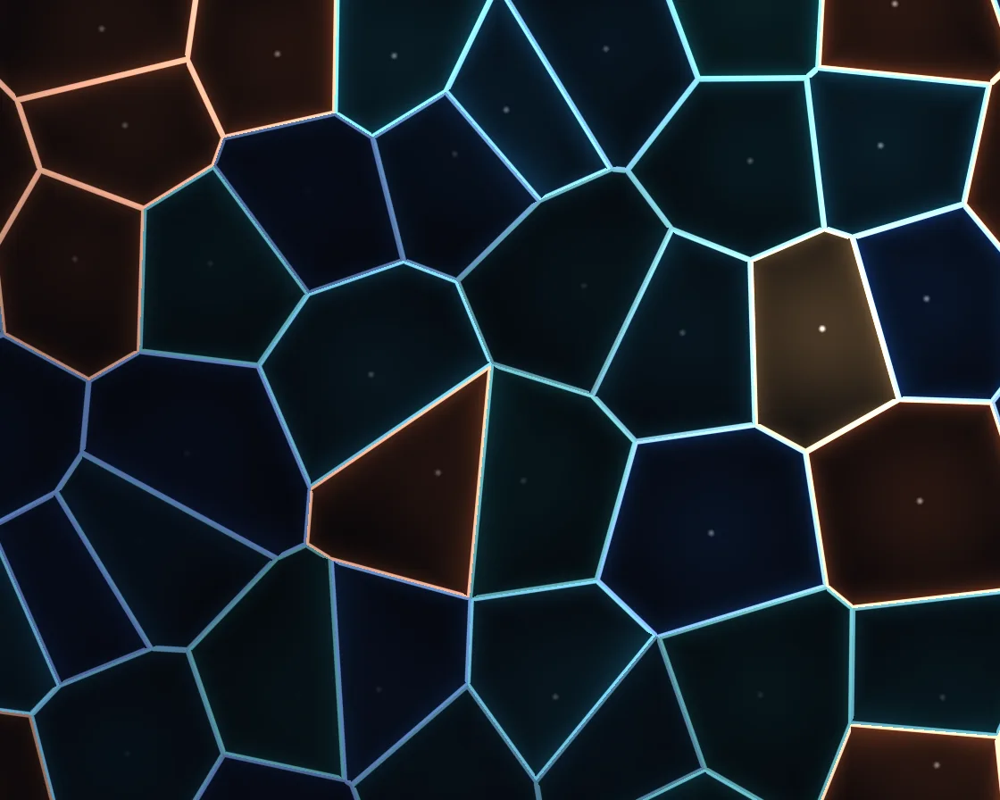

Voronoi cells
Voronoi cells is a WebGL effect: nearest and second-nearest seed distances; walls where F2 − F1 ≈ 0. One plain JavaScript file with no dependencies; add it with npx motion-library add voronoi-cells.

Open it live, tune it and copy the code
What is Voronoi cells?
A glass mosaic of drifting cells with glowing walls that slide and swap partners. The pointer is one more seed, pushing its neighbours aside.
How does Voronoi cells work?
Each pixel checks the 3 × 3 neighbouring seeds for F1 and F2; dividing F2 − F1 by its exact gradient keeps the walls an even pixel width.
How do I add Voronoi cells to my website?
- In your project folder, run
npx motion-library add voronoi-cells. It writesanimations/voronoi-cells.js. Needs Node 18 or newer. - Import it and call it with a container element that has a size:
import fx from './animations/voronoi-cells.js'; const stop = fx(document.querySelector('#hero')); - Call
stop()to clean up, for example when a component unmounts.
Every setting below is also a flag, so you can install it already tuned: npx motion-library add voronoi-cells --scale 14.
What settings can I tweak?
| Setting | Flag | Default | Range | Step |
|---|---|---|---|---|
| Cells across | --scale | 5 | 2 to 14 | 0.5 |
| Speed | --speed | 1 | 0 to 3 | 0.05 |
| Glow | --glow | 1 | 0 to 2 | 0.05 |
Specifications
- Renderer
- WebGL
- Category
- Generative & math
- Dependencies
- None
- File size
- 7.7 KB, unminified
- Interactive
- Yes: it responds to the pointer
- Reduced motion
- Respects prefers-reduced-motion
- Licence
- MIT-0: use it anywhere, no credit needed
Source code
// Voronoi cells: one seed per square of a grid, each wandering inside its square on its own slow orbit. Every pixel
// looks at the seeds in the 3 × 3 squares around it and keeps the nearest distance (F1) and the second nearest (F2).
// Where F2 − F1 is near zero the pixel is equally close to two seeds: that is a cell wall. Drawing walls from F2 − F1
// (rather than from an exact edge distance) is cheap and gives walls that swell gently at the corners, which reads
// as lit glass leading. A light sweeps across, and each cell keeps a dim tint and a faint glow towards its seed.
// The pointer (or an idle ghost) is one more seed, a warm amber one, and it shoulders the seeds near it aside.
const PARAMS = { scale: 5, speed: 1, glow: 1 };
export default function (stage) {
const canvas = document.createElement('canvas');
canvas.style.cssText = 'position:absolute;inset:0;width:100%;height:100%;display:block';
stage.append(canvas);
const gl = canvas.getContext('webgl2', { antialias: false });
if (!gl) { stage.textContent = 'This needs WebGL2.'; return () => canvas.remove(); }
const reduce = matchMedia('(prefers-reduced-motion: reduce)').matches;
const vs = `#version 300 es
in vec2 p; void main() { gl_Position = vec4(p, 0, 1); }`;
const fs = `#version 300 es
precision highp float; out vec4 o;
uniform vec2 R, M; uniform float T, D, MA, u_scale, u_speed, u_glow;
float hash(vec2 p) { return fract(sin(dot(p, vec2(127.1, 311.7))) * 43758.5453); }
vec2 hash2(vec2 p) { return fract(sin(vec2(dot(p, vec2(127.1, 311.7)), dot(p, vec2(269.5, 183.3)))) * 43758.5453); }
float noise(vec2 p) { vec2 i = floor(p), f = fract(p); f = f * f * (3. - 2. * f);
return mix(mix(hash(i), hash(i + vec2(1, 0)), f.x), mix(hash(i + vec2(0, 1)), hash(i + 1.), f.x), f.y); }
float fbm(vec2 p) { float s = 0., a = .5; mat2 m = mat2(1.6, 1.2, -1.2, 1.6); for (int i = 0; i < 5; i++) { s += a * noise(p); p = m * p; a *= .5; } return s; }
void main() {
vec2 p = (gl_FragCoord.xy - .5 * R) / R.y;
vec2 off = vec2(T * .05, 0.);
vec2 g = p * u_scale + off, mg = M * u_scale + off; // this pixel and the pointer seed, in squares
vec2 ip = floor(g), fp = fract(g);
float F1 = 8., F2 = 8.; vec2 id = vec2(0), rel = vec2(0), rel2 = vec2(1, 0);
for (int j = -1; j <= 1; j++) for (int i = -1; i <= 1; i++) {
vec2 o = vec2(i, j), h = hash2(ip + o);
// seeds near the pointer are pushed away from it; they wander less there, so each stays inside its square
vec2 aw = ip + o + .5 - mg; float pw = exp(-dot(aw, aw) * .5);
vec2 pt = o + .5 + .38 * (1. - .8 * pw) * sin(T * (.5 + .4 * h.yx) + 6.2832 * h) + aw * inversesqrt(dot(aw, aw) + 1e-4) * .38 * pw;
vec2 dv = pt - fp; float d = length(dv);
if (d < F1) { F2 = F1; rel2 = rel; F1 = d; id = ip + o; rel = dv; } else if (d < F2) { F2 = d; rel2 = dv; }
}
{ vec2 dv = mg - g; float d = length(dv); // the pointer is one more seed
if (d < F1) { F2 = F1; rel2 = rel; F1 = d; id = vec2(-1e3); rel = dv; } else if (d < F2) { F2 = d; rel2 = dv; } }
bool mine = id.x < -500.;
float e = F2 - F1;
float px = u_scale / R.y;
float h = hash(id);
vec3 tint = mine ? vec3(1., .74, .42) : h < .82 ? mix(vec3(.1, .35, .9), vec3(.1, .8, .85), hash(id + 7.)) : vec3(1., .45, .2);
// a light sweeping diagonally; each cell catches it a little differently
float sweep = .5 + .5 * sin(dot(p, vec2(.8, .6)) * 2.2 - T * .7 + h * 1.5);
vec3 col = vec3(.015, .017, .03);
float lamp = exp(-length(g - mg) * 1.3); // the pointer seed lights the leading near it
col += tint * (.05 + .08 * sweep + (mine ? .14 + .08 * MA : 0.)) * smoothstep(.9, .0, F1); // dim glass in the cell
float ge = length(rel / max(F1, 1e-4) - rel2 / max(F2, 1e-4)); // |gradient of F2 − F1|, worked out exactly
float ep = e / max(ge * px, 1e-5); // F2 − F1 measured in pixels
float wall = smoothstep(1.6 * D + .8, 1.6 * D - .8, ep); // a crisp wall of even width
float halo = exp(-e * 10.) * u_glow;
vec3 wc = mix(tint, vec3(.9, .97, 1.), .55);
col += wc * wall * (.45 + .75 * sweep) + vec3(1., .78, .5) * wall * lamp * (.6 + .4 * MA);
col += tint * halo * (.12 + .3 * sweep);
col += vec3(1.) * smoothstep(.03, .0, F1) * (mine ? 1. : .5 * sweep); // the seed itself
o = vec4(pow(col, vec3(.95)), 1);
}`;
const sh = (t, s) => { const x = gl.createShader(t); gl.shaderSource(x, s); gl.compileShader(x); if (!gl.getShaderParameter(x, gl.COMPILE_STATUS)) throw new Error(gl.getShaderInfoLog(x)); return x; };
const prog = gl.createProgram(); gl.attachShader(prog, sh(gl.VERTEX_SHADER, vs)); gl.attachShader(prog, sh(gl.FRAGMENT_SHADER, fs)); gl.bindAttribLocation(prog, 0, 'p'); gl.linkProgram(prog);
if (!gl.getProgramParameter(prog, gl.LINK_STATUS)) throw new Error(gl.getProgramInfoLog(prog));
gl.useProgram(prog);
gl.bindBuffer(gl.ARRAY_BUFFER, gl.createBuffer()); gl.bufferData(gl.ARRAY_BUFFER, new Float32Array([-1, -1, 3, -1, -1, 3]), gl.STATIC_DRAW);
gl.enableVertexAttribArray(0); gl.vertexAttribPointer(0, 2, gl.FLOAT, false, 0, 0);
const U = {}; ['R', 'M', 'T', 'D', 'MA', 'u_scale', 'u_speed', 'u_glow'].forEach(n => U[n] = gl.getUniformLocation(prog, n));
let dpr = 1;
const resize = () => { dpr = Math.min(devicePixelRatio, 2); canvas.width = (stage.clientWidth || 1) * dpr | 0; canvas.height = (stage.clientHeight || 1) * dpr | 0; gl.viewport(0, 0, canvas.width, canvas.height); };
const ro = new ResizeObserver(resize); ro.observe(stage); resize();
// the pointer, in shader space (units of stage height, origin at the centre, y up); an idle ghost takes over
// when nobody is pointing, so the amber seed keeps wandering through the mosaic
const ghostX = (g, asp) => asp * 0.3 * Math.sin(g * 0.29 + 0.9) + 0.05 * Math.sin(g * 1.1);
const ghostY = g => 0.22 * Math.sin(g * 0.41 + 2.2);
let gt = reduce ? 1.5 : 0, asp0 = canvas.width / canvas.height, tx = ghostX(gt, asp0), ty = ghostY(gt), mx = tx, my = ty, ma = 0, lastMove = -1e9;
const toLocal = e => { const b = canvas.getBoundingClientRect(); return [(e.clientX - b.left - b.width / 2) / b.height, (b.height / 2 - (e.clientY - b.top)) / b.height]; };
const onMove = e => { [tx, ty] = toLocal(e); lastMove = performance.now(); };
const onLeave = () => { lastMove = -1e9; };
const onDown = e => { onMove(e); };
canvas.addEventListener('pointermove', onMove); canvas.addEventListener('pointerdown', onDown); canvas.addEventListener('pointerleave', onLeave);
let raf, t = 0, last = performance.now();
function frame(now) {
const dt = Math.min(0.05, (now - last) / 1000); last = now;
t += dt * PARAMS.speed * (reduce ? 0.05 : 1);
const live = now - lastMove < 2500, asp = canvas.width / canvas.height;
if (!reduce) gt += dt;
if (!live) { tx = ghostX(gt, asp); ty = ghostY(gt); }
const k = 1 - Math.exp(-dt * (live ? 14 : 3));
mx += (tx - mx) * k; my += (ty - my) * k; ma += ((live ? 1 : 0) - ma) * (1 - Math.exp(-dt * 4));
gl.uniform2f(U.R, canvas.width, canvas.height); gl.uniform1f(U.T, t); gl.uniform1f(U.D, dpr);
gl.uniform2f(U.M, mx, my); gl.uniform1f(U.MA, ma);
gl.uniform1f(U.u_scale, PARAMS.scale);
gl.uniform1f(U.u_speed, PARAMS.speed);
gl.uniform1f(U.u_glow, PARAMS.glow);
gl.drawArrays(gl.TRIANGLES, 0, 3);
raf = requestAnimationFrame(frame);
}
raf = requestAnimationFrame(frame);
return () => { cancelAnimationFrame(raf); ro.disconnect(); canvas.removeEventListener('pointermove', onMove); canvas.removeEventListener('pointerdown', onDown); canvas.removeEventListener('pointerleave', onLeave); gl.getExtension('WEBGL_lose_context')?.loseContext(); canvas.remove(); };
}